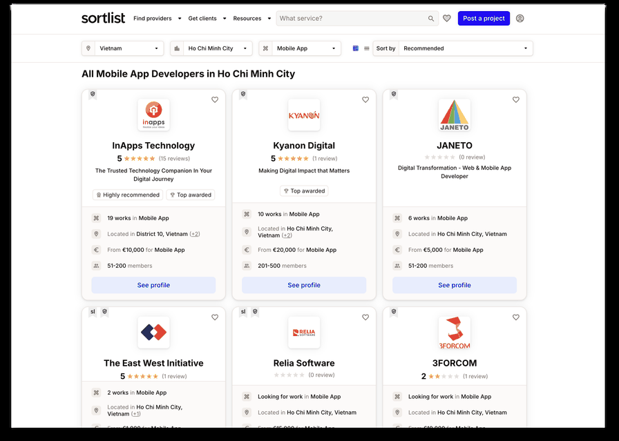
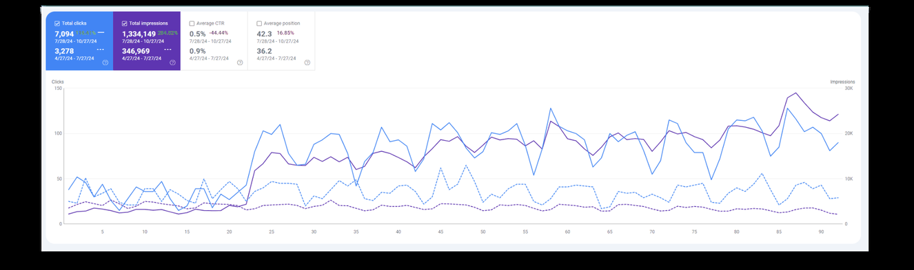

Case note · 05

InApps Technology: organic that produced leads, not just traffic
Aug 2024 – Mar 2026 · B2B Services · Consulting engagement
Consulting engagement, August 2024 to March 2026. A mobile app development company selling into a B2B market, where the only result that counts is a qualified inbound enquiry.
01 — At a glance
What did the InApps Technology engagement produce?
Andrew Hoang grew InApps Technology’s organic clicks by 116% and impressions by 285% over Jul–Oct 2024 against the prior period, following the project’s August 2024 launch, placing 80% of target keywords in the top 10. Inbound leads moved from 14 to 20 a month over the same period, and client reviews on B2B marketplace platforms went from zero to 15.
-
116%
More organic clicks
InApps Technology · GSC, Jul–Oct 2024 vs the prior period
-
285%
More organic impressions
InApps Technology · GSC, Jul–Oct 2024 vs the prior period
-
80%
Of target keywords in the top 10
InApps Technology · target keyword set
02 — The situation
What was the situation at InApps Technology?
InApps Technology builds mobile apps for clients. B2B services businesses have a specific organic problem: the search volume is small, the buying cycle is long, and traffic that does not turn into an enquiry is worth nothing at all.
So the target was never traffic. It was leads per month, which stood at 14.
03 — The constraint
What made organic search hard at InApps Technology?
Low-volume, high-intent search. There is no large keyword universe to work with in this category — the terms that matter are searched by a small number of people who are ready to buy, and every competitor is chasing the same handful.
The second constraint is that in B2B services the decision does not happen on your own website. Buyers compare vendors on third-party marketplaces and directory platforms, and InApps had no reviews on any of them. Zero. Organic rankings can get someone to the shortlist; an empty review profile takes them back off it.
04 — What I did
What did I do at InApps Technology?
Targeted the terms with buying intent behind them
The organic strategy went after the specific, commercially loaded queries rather than broad category terms. “Mobile Apps Developer in HCM” reached #1 — a geographic, role-specific, ready-to-hire query. The kind of term a small number of people search and most of them are looking to sign something.
Across the target keyword set, 80% reached the top 10.
InApps Technology · #1 for “Mobile Apps Developer in HCM”; 80% of target keywords in the top 10
Diversified into B2B marketplace channels
Rather than treating the website as the only acquisition surface, I expanded lead acquisition across B2B marketplace channels, so InApps was present where the vendor comparison was actually happening.
Built the review profile that the marketplaces depend on
Reviews went from 0 → 15, through client engagement strategies and targeted promotions that encouraged both existing and new clients to describe their experience. On a B2B marketplace this is not vanity — the listing ranking and the buyer’s shortlist both depend on it.
InApps Technology · client reviews on B2B platforms

05 — What it produced
What were the measured results at InApps Technology?
Inbound leads at InApps Technology moved from 14 to 20 a month, measured from the project’s August 2024 launch — six more qualified enquiries a month in a category where one closed deal is a development contract.
Inbound leads per month, before and after the engagement
14 20
InApps Technology · leads per month, following the Aug 2024 launch
Client reviews on B2B marketplace platforms, before and after the engagement
0 15
InApps Technology · B2B platform reviews
There is no bar under that second pair. The starting value is zero, so there is nothing that can be drawn to scale.
| Metric | Result | Timeframe |
|---|---|---|
| Inbound leads per month | 14 → 20 | GSC, Jul–Oct 2024 vs prior period |
| Organic clicks | +116% | GSC, Jul–Oct 2024 vs prior period |
| Organic impressions | +285% | GSC, Jul–Oct 2024 vs prior period |
| Target keywords in the top 10 | 80% | Aug 2024 – Mar 2026 |
| Ranking, “Mobile Apps Developer in HCM” | #1 | Aug 2024 – Mar 2026 |
| Client reviews on B2B platforms | 0 → 15 | GSC, Jul–Oct 2024 vs prior period |
Organic clicks
Impressions
InApps Technology · Google Search Console · 28 Jul–27 Oct 2024 against 27 Apr–27 Jul 2024

The lead number is the one that matters. Six more qualified enquiries a month, in a category where one closed deal is a development contract, is a different kind of result from a traffic percentage.
06 — Scope note
07 — What I would do differently
What would I do differently at InApps Technology?
I would start the review programme in month one, not after the rankings moved.
Reviews went from 0 → 15 and they underpin the marketplace channels that produced the extra leads. Because I built the ranking side first, some of the early traffic arrived at a vendor profile with nothing on it. That traffic is not recoverable.
I would track leads by source from the beginning.
Leads went from 14 → 20 per month across website organic and the diversified marketplace channels together. I can tell you the total moved. I would rather be able to tell you which channel moved it, and that requires the source tracking to exist before the campaign does, not after.
I would set expectations on timeline earlier.
Impressions grew far faster than clicks, and clicks grew faster than leads — which is exactly what a long B2B buying cycle looks like from the inside. Stating that shape up front, before the first monthly report, makes the early months legible instead of worrying.
08 — Next
Next
Every case study on this site is written the same way: the situation, the constraint, the mechanism, the measured result, and what the number does not say.
Previous case study: Permate, a marketplace launched into organic from zero